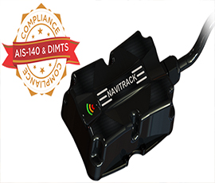
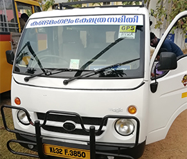

AIS 140 GPS Tracker Selection Guide
As per the Ministry of Road Transport and Highways (MORTH), all passenger transport vehicles to be mandatorily equipped with AIS 140 standard GPS devices.
Things to remember while selecting AIS 140 GPS Tracker
1.Warrenty to the device
2.Service offered
3.Software efficiency
4.Experience in GPS Tracking Feild
5.Good Client list
AIS 140 For school Bus in Kerala
Govt. of India, has directed all the state governments to enforce the standards, equip AIS 140 compliant GPS tracking devices with supporting software for all passenger-carrying vehicles and other public transport vehicles from April 1, 2019
Automotive Industry Standard 140 (AIS 140) is a set of standards published by Automotive Research Association of India (ARAI), to build an Intelligent Transportation System (ITS) for Ministry of Road Transport & Highway (MORTH), Government of India. In order to comply with AIS 140 guidelines, every commercial vehicle (with yellow number plate) will need to have a GPS tracking system and an emergency button installed.
With unprecedented rise in numbers of vehicles on the road in India’s urban cities, towns, and areas, traffic congestion is already hard to handle. Nothing runs smoothly if the traffic is untamed and unorganized.
AIS 140 compliant hardware/software would help relevant authorities gain control, enhance efficiency, quality, comfort and safety. The system is supposed to optimize transportation across various states by utilizing existing transport infrastructure and mitigating the challenges in road traffic management. This will help the department in tracking the vehicle in case of any emergency and also enable the passengers to apprise the control room of any kind of mishap or other emergencies. Moreover, Intelligent Transportation System ensure faster responses to unforeseen incidents, such as delayed schedule, vehicle break-down or an accident. In short, every event requires immediate attention.

Ais 140 GPS Installation @ FR.Xavier Aresseril Memorial English Medium School
Ebee Labz, completed installation of ARAI certified AIS 140 GPS devices on FR.XAVIER ARESSERIL MEMORIAL ENGLISH MEDIUM SCHOOL, Alappuzha District.
Ais 140 GPS Installation @ Sree Raja Rajeswari English Medium School
Ebee Labz, completed installation of ARAI certified AIS 140 GPS devices on Sree Rajarajeswari English Medium School, Kandamangalam, Alappuzha District.